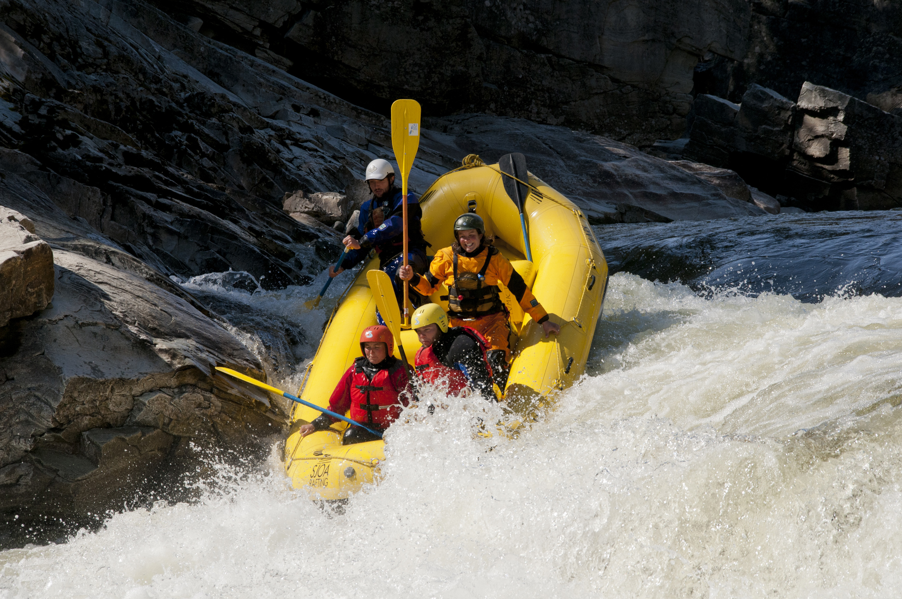
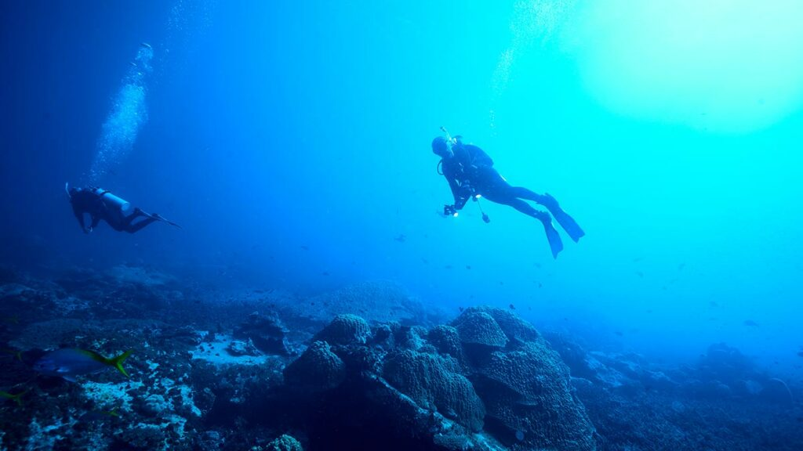
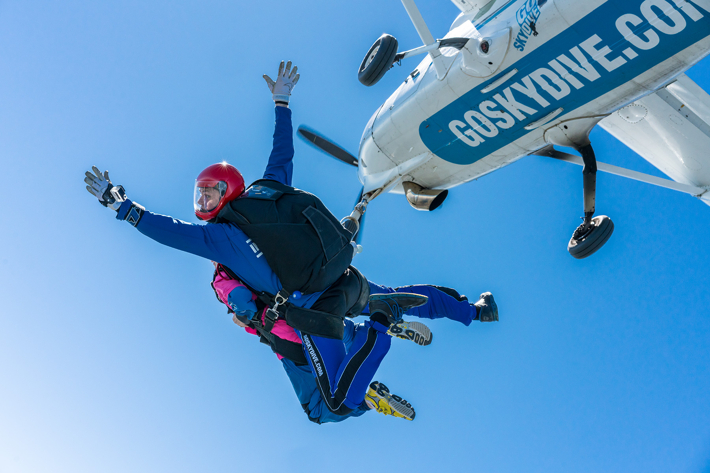

What is adventure traveling?
Hiking is not only a physical activity but also a mental and emotional escape from the routines of daily life.
It allows individuals to disconnect from technology, reconnect with nature, and find peace and solace in the wilderness.
Whether it's a short day hike or a multi-day trek, hiking offers a unique opportunity to explore the world's diverse landscapes and foster
a deeper connection with the natural world.
5 Best Type Of a Adventure Traveling
- Rafting
- Scuuba Diving
- SkyDriving
- Hiking
Rafting
Rafting, also known as white water rafting,
is an exhilarating outdoor adventure activity that involves navigating a river's rapids and turbulent waters using an inflatable raft or boat.
It is a popular recreational activity that appeals to thrill-seekers and nature enthusiasts alike.
Rafting is typically done in groups led by experienced guides who provide safety instructions and steer the raft through the challenging water conditions.
Rafting is a thrilling and unforgettable adventure that allows participants to connect with nature,
challenge themselves physically and mentally, and share an exciting experience with others.
It's essential to choose reputable and experienced rafting outfitters to ensure a safe and enjoyable journey on the river.
Learn more

Scuba Diving

Scuba diving is a recreational activity that allows individuals to explore the underwater world by using specialized equipment to breathe underwater.
The term "scuba" stands for "Self-Contained Underwater Breathing Apparatus," which refers to the gear that enables divers to breathe compressed
air or other breathing gases while submerged. Scuba diving offers a unique opportunity to experience marine life, coral reefs, shipwrecks,
and various underwater environments that are otherwise inaccessible to most people.
Scuba diving offers a sense of weightlessness and freedom underwater, providing a fascinating and immersive experience in the mesmerizing wo
rld beneath the waves. It allows divers to appreciate the beauty and fragility of marine ecosystems while fostering a deeper connection with
nature and marine life.
Learn more
SkyDriving
Skydiving is an exhilarating and extreme sport in which individuals jump from an aircraft at a high altitude and experience freefall before deploying
a parachute to slow their descent and land safely on the ground. It is a thrilling activity that appeals to adrenaline seekers and adventure
enthusiasts worldwide.
Skydiving provides an unparalleled sense of freedom, an adrenaline rush, and a breathtaking perspective of the world from high above.
It is often regarded as a life-changing experience and a way to challenge personal limits and fears. Safety is paramount in skydiving,
and participants must follow strict guidelines, use well-maintained equipment, and jump under the supervision of qualified instructors to ensure a
safe and memorable experience.
Learn more
